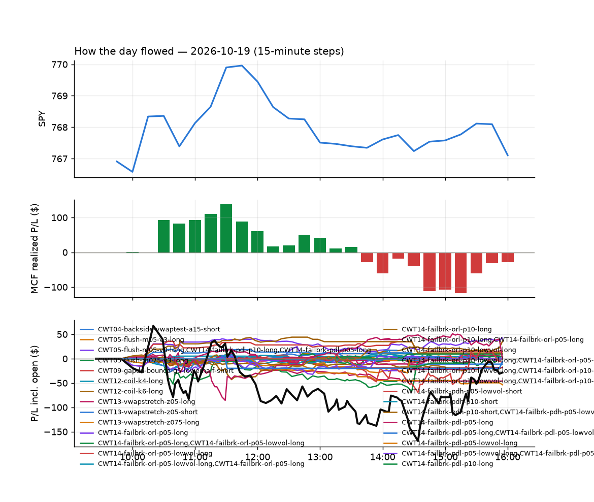
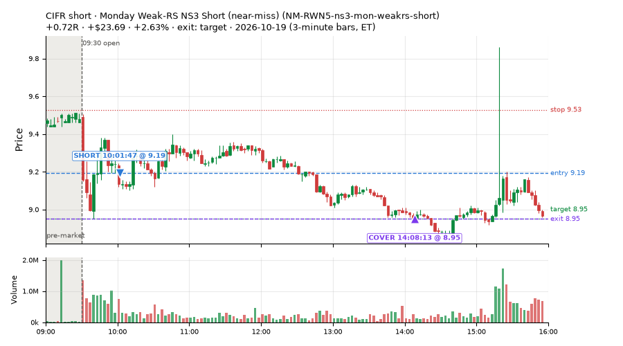
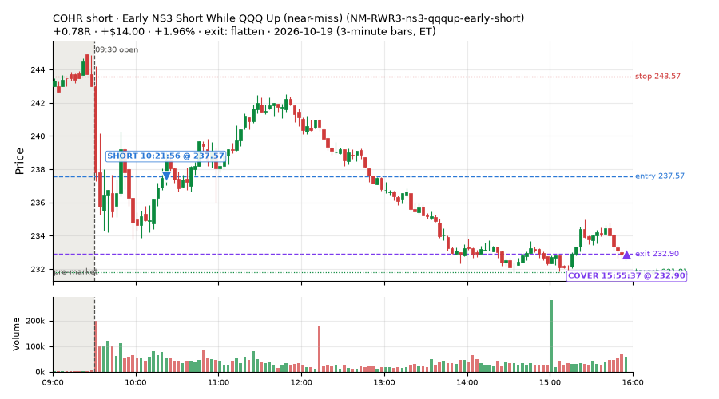
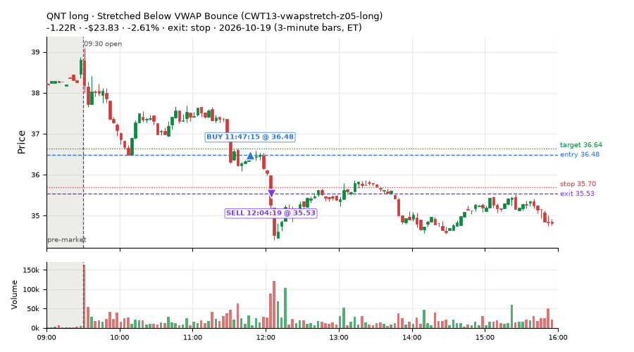
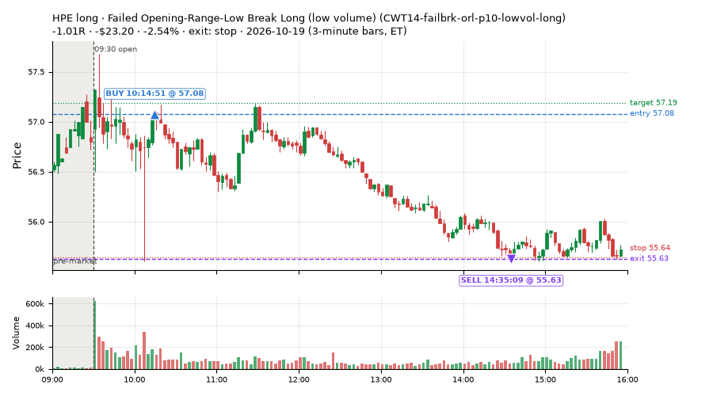
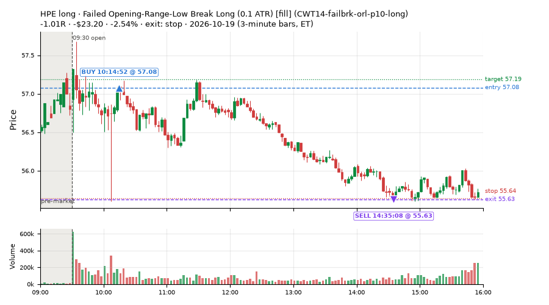
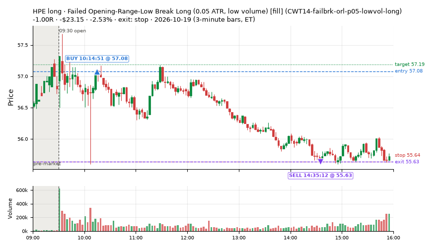
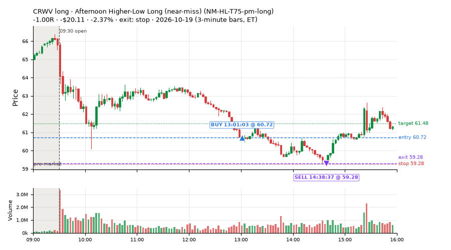

310 trades · win rate 60% · P/L $-28.53
PROBATION: no live setup has passed both locked test periods. 10 owner-directed setups added 2026-10-08 (MarcoFlow top 5 + 5 new), untested live. RW6G1 (RW6 + VWAP band guard) added 2026-10-09, probation.

| Symbol | Setup | Side | In | Out | Entry | Exit | Exit reason | % gained | P/L |
|---|---|---|---|---|---|---|---|---|---|
| CIFR | Monday Weak-RS NS3 Short (near-miss) (NM-RWN5-ns3-mon-weakrs-short) | short | 10:01 | 14:08 | 9.19 | 8.95 | target | +2.63% | $23.69 |
| COHR | Early NS3 Short While SPY Up (near-miss) (NM-RWN3-ns3-spyup-early-short) | short | 10:21 | 15:55 | 237.57 | 232.90 | flatten | +1.96% | $14.00 |
| COHR | Early NS3 Short While QQQ Up (near-miss) (NM-RWR3-ns3-qqqup-early-short) | short | 10:21 | 15:55 | 237.57 | 232.90 | flatten | +1.96% | $14.00 |
| Symbol | Setup | Side | In | Out | Entry | Exit | Exit reason | % lost | P/L |
|---|---|---|---|---|---|---|---|---|---|
| QNT | CWT13-vwapstretch-z05-long | long | 11:47 | 12:04 | 36.48 | 35.53 | stop | -2.61% | $-23.83 |
| HPE | CWT14-failbrk-orl-p10-lowvol-long | long | 10:14 | 14:35 | 57.08 | 55.63 | stop | -2.54% | $-23.20 |
| HPE | CWT14-failbrk-orl-p10-long | long | 10:14 | 14:35 | 57.08 | 55.63 | stop | -2.54% | $-23.20 |
| HPE | CWT14-failbrk-orl-p05-lowvol-long | long | 10:14 | 14:35 | 57.08 | 55.63 | stop | -2.53% | $-23.15 |
| CRWV | NM-HL-T75-pm-long | long | 13:01 | 14:38 | 60.72 | 59.28 | stop | -2.37% | $-20.11 |







Signal to fill: median 1s, 90th percentile 3s (310 trades). Bars close each minute; the order follows the bar close.
Best excursion (MFE): median 0.36R; worst (MAE) median 0.48R. 37% of trades never got +0.25R in our favour; 4 reached +1R and still closed at or below 0.
| Symbol | Setup | Best R | Worst R | Closed R |
|---|---|---|---|---|
| IBN | CWT04-backside-vwaptest-a15-short | +2.68 | -1.92 | -1.15 |
| MP | CWT14-failbrk-pdl-p05-long | +1.37 | -1.70 | -1.02 |
| MP | CWT14-failbrk-pdl-p05-lowvol-long | +1.37 | -1.70 | -0.97 |
| GMAB | CWT14-failbrk-pdh-p10-short | +0.71 | -1.69 | -1.14 |
| FE | CWT14-failbrk-orl-p05-long | +0.69 | -0.96 | -1.12 |
| Entry time | Trades | Win | Avg R | P/L |
|---|---|---|---|---|
| 09:50-10:30 | 192 | 60% | -0.15 | $19.84 |
| 10:30-11:30 | 22 | 64% | -0.15 | $-16.30 |
| 11:30-13:00 | 65 | 54% | -0.09 | $-84.29 |
| 13:00-14:00 | 16 | 69% | +0.12 | $3.29 |
| 14:00-16:00 | 15 | 80% | +0.26 | $48.93 |
| Setup | Trades | Win | Avg R | Adj R (net of SPY) | P/L |
|---|---|---|---|---|---|
| Backside VWAP-Test Short (CWT04-backside-vwaptest-a15-short) | 1.0 | 0% | -1.15 | -1.44 | $-0.90 |
| Panic Flush Reversal (3x volume) (CWT05-flush-m05-v3-long) | 2.0 | 100% | +0.41 | +0.36 | $10.34 |
| Panic Flush Reversal (deep, 3x volume) (CWT05-flush-m075-v3-long) | 1.0 | 100% | +0.16 | +0.07 | $0.84 |
| Gap-Down Bounce Rejection Short (5% gap) (CWT09-gapdn-bounce-g5-lowerhalf-short) | 1.0 | 0% | -1.06 | -1.13 | $-18.52 |
| Coil Under the High (4 bars) (CWT12-coil-k4-long) | 7.0 | 86% | +0.34 | +0.47 | $10.71 |
| Coil Under the High (6 bars) (CWT12-coil-k6-long) | 1.0 | 0% | -0.37 | -0.33 | $-17.50 |
| Stretched Below VWAP Bounce (CWT13-vwapstretch-z05-long) | 3.0 | 0% | -1.02 | -0.99 | $-46.01 |
| Stretched Above VWAP Fade (CWT13-vwapstretch-z05-short) | 5.0 | 40% | -0.09 | -0.73 | $-0.76 |
| Stretched Below VWAP Bounce (far) (CWT13-vwapstretch-z075-long) | 1.0 | 100% | +1.20 | +1.12 | $11.70 |
| Failed Opening-Range-Low Break Long (0.05 ATR) [fill] (CWT14-failbrk-orl-p05-long) | 58.0 | 67% | -0.03 | -0.04 | $42.41 |
| Failed Opening-Range-Low Break Long (0.05 ATR, low volume) [fill] (CWT14-failbrk-orl-p05-lowvol-long) | 53.0 | 64% | -0.06 | -0.10 | $15.20 |
| Failed Opening-Range-Low Break Long (0.1 ATR) [fill] (CWT14-failbrk-orl-p10-long) | 27.0 | 59% | -0.18 | -0.24 | $10.55 |
| Failed Opening-Range-Low Break Long (low volume) (CWT14-failbrk-orl-p10-lowvol-long) | 19.0 | 58% | -0.19 | -0.21 | $-11.21 |
| Failed Prior-Day-High Break Short (0.05 ATR, low volume) [fill] (CWT14-failbrk-pdh-p05-lowvol-short) | 9.0 | 56% | -0.12 | -0.19 | $-1.62 |
| Failed Prior-Day-High Break Short (0.1 ATR) [fill] (CWT14-failbrk-pdh-p10-short) | 4.0 | 75% | +0.06 | +0.11 | $4.36 |
| Failed Prior-Day-Low Break Long (shallow) (CWT14-failbrk-pdl-p05-long) | 39.0 | 59% | -0.06 | -0.14 | $3.97 |
| Failed Prior-Day-Low Break Long (0.05 ATR, low volume) [fill] (CWT14-failbrk-pdl-p05-lowvol-long) | 29.0 | 45% | -0.35 | -0.41 | $-53.62 |
| Failed Prior-Day-Low Break Long (CWT14-failbrk-pdl-p10-long) | 22.0 | 64% | -0.16 | -0.24 | $4.90 |
| Failed Prior-Day-Low Break Long (0.1 ATR, low volume) [fill] (CWT14-failbrk-pdl-p10-lowvol-long) | 12.0 | 58% | -0.18 | -0.21 | $-18.51 |
| Late-Day ETF Dip Buy (near-miss) (NM-ETF-late-dip-di-long) | 1.0 | 100% | +0.68 | +0.71 | $9.40 |
| Afternoon Higher-Low Long (near-miss) (NM-HL-T75-pm-long) | 6.0 | 50% | -0.07 | -0.11 | $-7.81 |
| Early NS3 Short While SPY Up (near-miss) (NM-RWN3-ns3-spyup-early-short) | 2.0 | 50% | -0.16 | -0.18 | $-5.98 |
| Monday Weak-RS NS3 Short (near-miss) (NM-RWN5-ns3-mon-weakrs-short) | 5.0 | 80% | +0.34 | +0.28 | $35.52 |
| Early NS3 Short While QQQ Up (near-miss) (NM-RWR3-ns3-qqqup-early-short) | 2.0 | 50% | -0.16 | -0.18 | $-5.98 |
Market direction (SPY, beta 1) accounted for $25.40 of today's $-28.53; the rest ($-53.93) came from the setups themselves. Avg R net of SPY: -0.16 (incl. a hedge leg's cost; report only).
42 setups live today. Today: 479 signals, 310 taken, 28 lost because another setup held the symbol (6%). Since 2026-10-12 (6 sessions): 5556 signals, 2590 taken, 590 lost to other setups (11%). Peak open positions today 93 of 400 slots. Earnings blackout removed 365 symbols before scanning.
Simulated playing time (not live): 2958 what-if trades of signals not taken, avg -0.13R, 57% winners; of them 590 lost to another setup (avg -0.17R).
Silent: CWT04-backside-lh-a25-short, CWT04-backside-vwaptest-a25-short
| Prio | Setup | Today sig / taken | Sessions | Signals / taken / trades | Taken/day | Expected/day | Lost to other setups | Lost to (setup n) | Top skip reasons | SIMULATED: not-taken n / avg R / win | Verdict |
|---|---|---|---|---|---|---|---|---|---|---|---|
| 1 | Monday Weak-RS NS3 Short (near-miss) NM-RWN5-ns3-mon-weakrs-short | 6 / 5 | 1 | 6 / 5 / 5 | 5.00 | – | 0 | – | spread / quote / size 1 | 1 / -1.02R / 0% | ok 25.0 entries/week |
| 2 | Early NS3 Short While QQQ Up (near-miss) NM-RWR3-ns3-qqqup-early-short | 3 / 2 | 1 | 3 / 2 / 2 | 2.00 | – | 0 | – | spread / quote / size 1 | 1 / -1.02R / 0% | slow 10.0 entries/week; ~6 weeks to 60 trades |
| 3 | Early NS3 Short While SPY Up (near-miss) NM-RWN3-ns3-spyup-early-short | 3 / 2 | 1 | 3 / 2 / 2 | 2.00 | – | 0 | – | spread / quote / size 1 | 1 / -1.02R / 0% | slow 10.0 entries/week; ~6 weeks to 60 trades |
| 4 | Late-Day ETF Dip Buy (near-miss) NM-ETF-late-dip-di-long | 1 / 1 | 1 | 1 / 1 / 1 | 1.00 | – | 0 | – | – | 0 / – | slow 5.0 entries/week; ~12 weeks to 60 trades |
| 5 | NS2 Up-3 Short, QQQ Up, Slope Down (near-miss) NM-RWR4-ns2-up3-qqqup-slopedn-short | 0 / 0 | 1 | 0 / 0 / 0 | 0.00 | – | 0 | – | – | 0 / – | quiet - wait no signals in 1 session(s); too early to tell |
| 6 | Afternoon Exhaustion Short, Gap-Down, SPY Up (near-miss) NM-RWR1-exh150-gapdn-spyup-pm-short | 0 / 0 | 1 | 0 / 0 / 0 | 0.00 | – | 0 | – | – | 0 / – | quiet - wait no signals in 1 session(s); too early to tell |
| 7 | NS2 Short, SPY Up 0.5%, Not Friday (near-miss) NM-RWN4-ns2-spyup05-notfri-short | 0 / 0 | 1 | 0 / 0 / 0 | 0.00 | – | 0 | – | – | 0 / – | quiet - wait no signals in 1 session(s); too early to tell |
| 8 | Gap-Down Capitulation Buy (near-miss) NM-AR-AM-gapdown-capitulation-long | 0 / 0 | 1 | 0 / 0 / 0 | 0.00 | – | 0 | – | – | 0 / – | quiet - wait no signals in 1 session(s); too early to tell |
| 9 | Quiet Downtrend Bounce Short (near-miss) NM-AMS-N1-quiet-morning-short | 0 / 0 | 1 | 0 / 0 / 0 | 0.00 | – | 0 | – | – | 0 / – | quiet - wait no signals in 1 session(s); too early to tell |
| 10 | Gap-Down Reclaim Fade, Afternoon (near-miss) NM-PM-gapdn-above-pdh-rvol-short | 0 / 0 | 1 | 0 / 0 / 0 | 0.00 | – | 0 | – | – | 0 / – | quiet - wait no signals in 1 session(s); too early to tell |
| 11 | Gap-Down VWAP Loss Short, Slope Filter (near-miss) NM1-cwt09-g10-vwaploss-short | 0 / 0 | 1 | 0 / 0 / 0 | 0.00 | – | 0 | – | – | 0 / – | quiet - wait no signals in 1 session(s); too early to tell |
| 12 | Afternoon Higher-Low Long (near-miss) NM-HL-T75-pm-long | 6 / 6 | 1 | 6 / 6 / 6 | 6.00 | – | 0 | – | – | 0 / – | ok 30.0 entries/week |
| 13 | Backside Lower-High Short (big runner) CWT04-backside-lh-a25-short | 0 / 0 | 6 | 0 / 0 / 0 | 0.00 | – | 0 | – | – | 0 / – | silent no signals in 6 session(s); no expected rate on file |
| 14 | Backside VWAP-Test Short (big runner) CWT04-backside-vwaptest-a25-short | 0 / 0 | 6 | 0 / 0 / 0 | 0.00 | – | 0 | – | – | 0 / – | silent no signals in 6 session(s); no expected rate on file |
| 15 | Gap-Down VWAP Loss Short (10% gap) CWT09-gapdn-vwaploss-g10-short | 0 / 0 | 6 | 27 / 2 / 2 | 0.33 | – | 0 | – | not shortable / shorts off 23, daily loss cap 1, spread / quote / size 1 | 25 / -0.30R / 40% | slow 1.7 entries/week; ~36 weeks to 60 trades |
| 16 | Panic Flush Reversal (deep, 5x volume) CWT05-flush-m075-v5-long | 0 / 0 | 6 | 5 / 3 / 3 | 0.50 | – | 0 | – | daily loss cap 2 | 2 / +0.52R / 100% | slow 2.5 entries/week; ~24 weeks to 60 trades |
| 17 | Gap-Down Bounce Rejection Short (10% gap) CWT09-gapdn-bounce-g10-lowerhalf-short | 0 / 0 | 6 | 44 / 4 / 4 | 0.67 | – | 0 | – | not shortable / shorts off 38, spread / quote / size 1, broker rejected 1 | 40 / -0.82R / 10% | slow 3.3 entries/week; ~18 weeks to 60 trades |
| 18 | Backside Lower-High Short CWT04-backside-lh-a15-short | 1 / 0 | 6 | 3 / 1 / 1 | 0.17 | – | 0 | – | daily loss cap 1, spread / quote / size 1 | 2 / -0.05R / 50% | slow 0.8 entries/week; ~72 weeks to 60 trades |
| 19 | Panic Flush Reversal (5x volume) CWT05-flush-m05-v5-long | 1 / 0 | 6 | 8 / 4 / 4 | 0.67 | – | 1 | CWT14-failbrk-orl-p10-long 1 | daily loss cap 2, symbol held by another setup 1, spread / quote / size 1 | 4 / +0.58R / 100% | slow 3.3 entries/week; ~18 weeks to 60 trades |
| 20 | Panic Flush Reversal (deep, 3x volume) CWT05-flush-m075-v3-long | 1 / 1 | 6 | 12 / 8 / 8 | 1.33 | – | 0 | – | daily loss cap 3, broker rejected 1 | 4 / +0.46R / 100% | slow 6.7 entries/week; ~9 weeks to 60 trades |
| 21 | Spike-Pullback Flag Breakout CWT12-flag-s1-long | 0 / 0 | 6 | 11 / 7 / 7 | 1.17 | – | 0 | – | daily loss cap 2, spread / quote / size 1, broker rejected 1 | 4 / -0.16R / 75% | slow 5.8 entries/week; ~10 weeks to 60 trades |
| 22 | Backside VWAP-Test Short CWT04-backside-vwaptest-a15-short | 1 / 1 | 6 | 6 / 3 / 3 | 0.50 | – | 0 | – | daily loss cap 1, not shortable / shorts off 1, spread / quote / size 1 | 3 / +2.10R / 100% | slow 2.5 entries/week; ~24 weeks to 60 trades |
| 23 | Stretched Above VWAP Fade (far) CWT13-vwapstretch-z075-short | 0 / 0 | 6 | 14 / 2 / 2 | 0.33 | – | 0 | – | not shortable / shorts off 8, daily loss cap 4 | 12 / -0.69R / 17% | slow 1.7 entries/week; ~36 weeks to 60 trades |
| 24 | Gap-Down VWAP Loss Short (5% gap) CWT09-gapdn-vwaploss-g5-short | 0 / 0 | 6 | 154 / 29 / 29 | 4.83 | – | 2 | CWT14-failbrk-orl-p05-long 2, CWT14-failbrk-orl-p10-long 1 | not shortable / shorts off 98, spread / quote / size 16, daily loss cap 9 | 125 / -0.32R / 26% | ok 24.2 entries/week |
| 25 | Panic Flush Reversal (3x volume) CWT05-flush-m05-v3-long | 3 / 2 | 6 | 28 / 10 / 11 | 1.67 | – | 5 | CWT05-flush-m075-v3-long 4, CWT05-flush-m075-v5-long 3, CWT05-flush-m05-v5-long 3 | daily loss cap 11, symbol held by another setup 5, spread / quote / size 1 | 18 / -0.08R / 61% | slow 8.3 entries/week; ~7 weeks to 60 trades |
| 26 | Gap-Down Bounce Rejection Short (5% gap) CWT09-gapdn-bounce-g5-lowerhalf-short | 3 / 1 | 6 | 174 / 42 / 42 | 7.00 | – | 3 | CWT09-gapdn-bounce-g10-lowerhalf-short 2, CWT09-gapdn-vwaploss-g10-short 1, CWT09-gapdn-vwaploss-g5-short 1 | not shortable / shorts off 108, spread / quote / size 16, symbol held by another setup 3 | 132 / +0.21R / 34% | ok 35.0 entries/week |
| 27 | Stretched Below VWAP Bounce (far) CWT13-vwapstretch-z075-long | 1 / 1 | 6 | 38 / 8 / 8 | 1.33 | – | 0 | – | daily loss cap 28, spread / quote / size 2 | 30 / -0.38R / 40% | slow 6.7 entries/week; ~9 weeks to 60 trades |
| 28 | Stretched Above VWAP Fade CWT13-vwapstretch-z05-short | 6 / 5 | 6 | 94 / 46 / 46 | 7.67 | – | 0 | – | daily loss cap 29, not shortable / shorts off 14, spread / quote / size 5 | 48 / -0.85R / 10% | ok 38.3 entries/week |
| 29 | Coil Under the High (6 bars) CWT12-coil-k6-long | 1 / 1 | 6 | 94 / 42 / 42 | 7.00 | – | 20 | CWT12-coil-k4-long 18, CWT14-failbrk-orl-p05-lowvol-long 1, CWT14-failbrk-orl-p05-long 1 | spread / quote / size 26, symbol held by another setup 20, daily loss cap 5 | 52 / -0.65R / 17% | ok 35.0 entries/week |
| 30 | Stretched Below VWAP Bounce CWT13-vwapstretch-z05-long | 4 / 3 | 6 | 183 / 25 / 25 | 4.17 | – | 1 | CWT14-failbrk-pdh-p05-lowvol-short 1 | daily loss cap 152, spread / quote / size 5, symbol held by another setup 1 | 157 / -0.13R / 60% | ok 20.8 entries/week |
| 31 | Failed Prior-Day-High Break Short (low volume) CWT14-failbrk-pdh-p10-lowvol-short | 5 / 0 | 6 | 151 / 87 / 87 | 14.50 | – | 8 | CWT14-failbrk-orl-p10-lowvol-long 3, CWT14-failbrk-pdh-p10-short 2, CWT14-failbrk-pdh-p05-lowvol-short 2 | spread / quote / size 39, daily loss cap 9, symbol held by another setup 8 | 64 / +0.15R / 78% | ok 72.5 entries/week |
| 32 | Failed Prior-Day-Low Break Long (0.1 ATR, low volume) [fill] CWT14-failbrk-pdl-p10-lowvol-long | 14 / 12 | 6 | 138 / 89 / 89 | 14.83 | – | 7 | CWT14-failbrk-pdl-p10-long 3, CWT14-failbrk-pdl-p05-lowvol-long 2, CWT09-gapdn-bounce-g5-lowerhalf-short 1 | spread / quote / size 28, daily loss cap 12, symbol held by another setup 7 | 48 / -0.09R / 65% | ok 74.2 entries/week |
| 33 | Failed Prior-Day-High Break Short (0.1 ATR) [fill] CWT14-failbrk-pdh-p10-short | 11 / 4 | 6 | 277 / 158 / 158 | 26.33 | – | 25 | CWT14-failbrk-pdh-p10-lowvol-short 19, CWT14-failbrk-orl-p10-lowvol-long 3, CWT14-failbrk-pdh-p05-lowvol-short 2 | spread / quote / size 68, symbol held by another setup 25, not shortable / shorts off 13 | 119 / +0.04R / 73% | ok 131.7 entries/week |
| 34 | Failed Opening-Range-Low Break Long (low volume) CWT14-failbrk-orl-p10-lowvol-long | 30 / 19 | 6 | 316 / 176 / 176 | 29.33 | – | 13 | CWT14-failbrk-pdl-p10-lowvol-long 4, CWT14-failbrk-orl-p05-lowvol-long 3, CWT14-failbrk-orl-p05-long 2 | daily loss cap 50, spread / quote / size 49, broker rejected 15 | 140 / +0.01R / 71% | ok 146.7 entries/week |
| 35 | Failed Prior-Day-Low Break Long CWT14-failbrk-pdl-p10-long | 26 / 22 | 6 | 271 / 175 / 175 | 29.17 | – | 20 | CWT14-failbrk-pdl-p10-lowvol-long 15, CWT14-failbrk-pdl-p05-lowvol-long 4, CWT14-failbrk-pdl-p05-long 2 | spread / quote / size 45, daily loss cap 26, symbol held by another setup 20 | 95 / -0.16R / 58% | ok 145.8 entries/week |
| 36 | Failed Opening-Range-Low Break Long (0.1 ATR) [fill] CWT14-failbrk-orl-p10-long | 40 / 27 | 6 | 419 / 192 / 192 | 32.00 | – | 55 | CWT14-failbrk-orl-p10-lowvol-long 43, CWT14-failbrk-orl-p05-lowvol-long 9, CWT14-failbrk-pdl-p10-lowvol-long 8 | spread / quote / size 61, symbol held by another setup 55, daily loss cap 51 | 226 / -0.06R / 67% | ok 160.0 entries/week |
| 37 | Failed Prior-Day-High Break Short (0.05 ATR, low volume) [fill] CWT14-failbrk-pdh-p05-lowvol-short | 15 / 9 | 6 | 315 / 178 / 178 | 29.67 | – | 34 | CWT14-failbrk-pdh-p10-lowvol-short 21, CWT14-failbrk-orl-p05-lowvol-long 5, CWT14-failbrk-pdh-p10-short 3 | spread / quote / size 56, daily loss cap 37, symbol held by another setup 34 | 137 / -0.03R / 68% | ok 148.3 entries/week |
| 38 | Failed Prior-Day-Low Break Long (0.05 ATR, low volume) [fill] CWT14-failbrk-pdl-p05-lowvol-long | 38 / 29 | 6 | 303 / 174 / 174 | 29.00 | – | 26 | CWT14-failbrk-pdl-p10-lowvol-long 16, CWT14-failbrk-pdl-p10-long 12, CWT14-failbrk-pdl-p05-long 6 | spread / quote / size 59, daily loss cap 40, symbol held by another setup 26 | 127 / -0.05R / 64% | ok 145.0 entries/week |
| 39 | Coil Under the High (4 bars) CWT12-coil-k4-long | 10 / 7 | 6 | 262 / 172 / 172 | 28.67 | – | 4 | CWT14-failbrk-pdl-p05-lowvol-long 1, CWT14-failbrk-pdl-p10-lowvol-long 1, CWT14-failbrk-pdh-p05-lowvol-short 1 | per-setup cap 41, spread / quote / size 25, daily loss cap 19 | 90 / -0.05R / 63% | ok 143.3 entries/week |
| 40 | Failed Prior-Day-Low Break Long (shallow) CWT14-failbrk-pdl-p05-long | 55 / 39 | 6 | 497 / 231 / 231 | 38.50 | – | 104 | CWT14-failbrk-pdl-p05-lowvol-long 70, CWT14-failbrk-pdl-p10-long 58, CWT14-failbrk-pdl-p10-lowvol-long 51 | symbol held by another setup 104, spread / quote / size 88, daily loss cap 69 | 265 / -0.11R / 62% | ok 192.5 entries/week |
| 41 | Failed Opening-Range-Low Break Long (0.05 ATR, low volume) [fill] CWT14-failbrk-orl-p05-lowvol-long | 84 / 53 | 6 | 705 / 347 / 347 | 57.83 | – | 65 | CWT14-failbrk-orl-p10-lowvol-long 31, CWT14-failbrk-orl-p10-long 11, CWT14-failbrk-orl-p05-long 11 | daily loss cap 118, spread / quote / size 83, symbol held by another setup 65 | 358 / -0.08R / 65% | ok 289.2 entries/week |
| 42 | Failed Opening-Range-Low Break Long (0.05 ATR) [fill] CWT14-failbrk-orl-p05-long | 110 / 58 | 6 | 988 / 359 / 359 | 59.83 | – | 197 | CWT14-failbrk-orl-p05-lowvol-long 126, CWT14-failbrk-orl-p10-lowvol-long 103, CWT14-failbrk-orl-p10-long 98 | symbol held by another setup 197, daily loss cap 157, per-setup cap 129 | 628 / -0.20R / 57% | ok 299.2 entries/week |
Every trade is attached as a CSV you can open and edit in Excel or Google Sheets. Live page: https://misiti15.github.io/MCF/live/